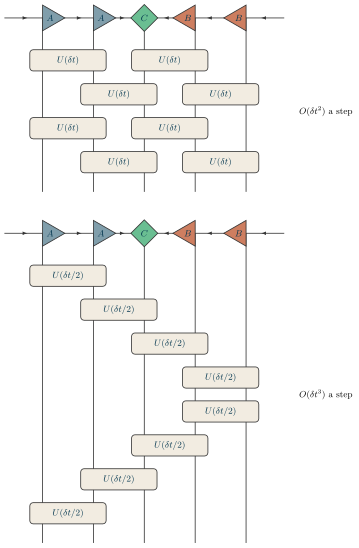

Examples / 17
Trotter steps

A step of TEBD, written two ways.
First order, on top. exp(-i dt H), with H a sum of terms on neighbouring sites, is split into the terms on the even bonds – (1,2) and (3,4), which commute with one another – and the terms on the odd bonds – (2,3) and (4,5). Each group is applied at once, as one layer of gates: two layers a step, and an error of O(dt^2) a step. Two steps are drawn, so that the pattern the gates make – a brick wall – shows.
Second order, below. The same gates at half a step, in a sequence that is its own reverse – along the chain and back – which is what kills the leading error term; O(dt^3) a step. The picture shows the symmetry rather than asserting it.
The state is drawn in a definite mixed canonical form, which is what it is when the step begins. Applied gate by gate, as the second order is, the orthogonality center travels with the gates: after a gate on (i, i+1) and the truncation that follows it, it sits ready for (i+1, i+2).
Read downward: the state at the top, its gates under it, a layer at a time. The layers of gates are closer to one another than to the state (rises=), because they are one circuit, and side by side in a layer they share no index (apart=). No gate has legs of its own; a site a gate does not touch is ‘|’ in its layer, so every physical index runs the whole way down and a gate is laid on the two it acts on. The order of each step is written beside its middle.
The picture
Point at a line to see what it draws, or at the picture to see which line drew it.
\begin{tikzpicture} \tnstack[rises={g2=0.8, g3=0.8, g4=0.8}]{S}{5}{ket, g1, g2, g3, g4} \tnlayer{S}{ket}{2*canl/$A$, center/$C$, 2*canr/$B$} \tnlayer{S}{g1}{2*gate/$U(\delta t)$/2, |} \tnlayer{S}{g2}{|, 2*gate/$U(\delta t)$/2} \tnlayer{S}{g3}{2*gate/$U(\delta t)$/2, |} \tnlayer{S}{g4}{|, 2*gate/$U(\delta t)$/2} \tnconnect[along=gauge, apart={g1, g2, g3, g4}]{S} \tnopen[edge=gauge]{left}{S-ket-1} \tnopen[edge=gauge]{right}{S-ket-5} \tnopen{down}{S} \tnmid[right]{S-g2-6-slot}{S-g3-6-slot}{$O(\delta t^2)$ a step} \tnbreak \tnstack[rises={g2=0.8, g3=0.8, g4=0.8, g5=0.8, g6=0.8, g7=0.8, g8=0.8}]{T}{5}{ket, g1, g2, g3, g4, g5, g6, g7, g8} \tnlayer{T}{ket}{2*canl/$A$, center/$C$, 2*canr/$B$} \tnlayer{T}{g1}{gate/{$U(\delta t/2)$}/2, 3*|} \tnlayer{T}{g2}{|, gate/{$U(\delta t/2)$}/2, 2*|} \tnlayer{T}{g3}{2*|, gate/{$U(\delta t/2)$}/2, |} \tnlayer{T}{g4}{3*|, gate/{$U(\delta t/2)$}/2} \tnlayer{T}{g5}{3*|, gate/{$U(\delta t/2)$}/2} \tnlayer{T}{g6}{2*|, gate/{$U(\delta t/2)$}/2, |} \tnlayer{T}{g7}{|, gate/{$U(\delta t/2)$}/2, 2*|} \tnlayer{T}{g8}{gate/{$U(\delta t/2)$}/2, 3*|} \tnconnect[along=gauge]{T} \tnopen[edge=gauge]{left}{T-ket-1} \tnopen[edge=gauge]{right}{T-ket-5} \tnopen{down}{T} \tnmid[right]{T-g4-6-slot}{T-g5-6-slot}{$O(\delta t^3)$ a step}\end{tikzpicture}
The whole file
\documentclass[border=4pt]{standalone}\usepackage{amsmath,amssymb}\usepackage{tikz-tensors}\input{notation}\begin{document}\begin{tikzpicture} \tnstack[rises={g2=0.8, g3=0.8, g4=0.8}]{S}{5}{ket, g1, g2, g3, g4} \tnlayer{S}{ket}{2*canl/$A$, center/$C$, 2*canr/$B$} \tnlayer{S}{g1}{2*gate/$U(\delta t)$/2, |} \tnlayer{S}{g2}{|, 2*gate/$U(\delta t)$/2} \tnlayer{S}{g3}{2*gate/$U(\delta t)$/2, |} \tnlayer{S}{g4}{|, 2*gate/$U(\delta t)$/2} \tnconnect[along=gauge, apart={g1, g2, g3, g4}]{S} \tnopen[edge=gauge]{left}{S-ket-1} \tnopen[edge=gauge]{right}{S-ket-5} \tnopen{down}{S} \tnmid[right]{S-g2-6-slot}{S-g3-6-slot}{$O(\delta t^2)$ a step} \tnbreak \tnstack[rises={g2=0.8, g3=0.8, g4=0.8, g5=0.8, g6=0.8, g7=0.8, g8=0.8}]{T}{5}{ket, g1, g2, g3, g4, g5, g6, g7, g8} \tnlayer{T}{ket}{2*canl/$A$, center/$C$, 2*canr/$B$} \tnlayer{T}{g1}{gate/{$U(\delta t/2)$}/2, 3*|} \tnlayer{T}{g2}{|, gate/{$U(\delta t/2)$}/2, 2*|} \tnlayer{T}{g3}{2*|, gate/{$U(\delta t/2)$}/2, |} \tnlayer{T}{g4}{3*|, gate/{$U(\delta t/2)$}/2} \tnlayer{T}{g5}{3*|, gate/{$U(\delta t/2)$}/2} \tnlayer{T}{g6}{2*|, gate/{$U(\delta t/2)$}/2, |} \tnlayer{T}{g7}{|, gate/{$U(\delta t/2)$}/2, 2*|} \tnlayer{T}{g8}{gate/{$U(\delta t/2)$}/2, 3*|} \tnconnect[along=gauge]{T} \tnopen[edge=gauge]{left}{T-ket-1} \tnopen[edge=gauge]{right}{T-ket-5} \tnopen{down}{T} \tnmid[right]{T-g4-6-slot}{T-g5-6-slot}{$O(\delta t^3)$ a step}\end{tikzpicture}\end{document}